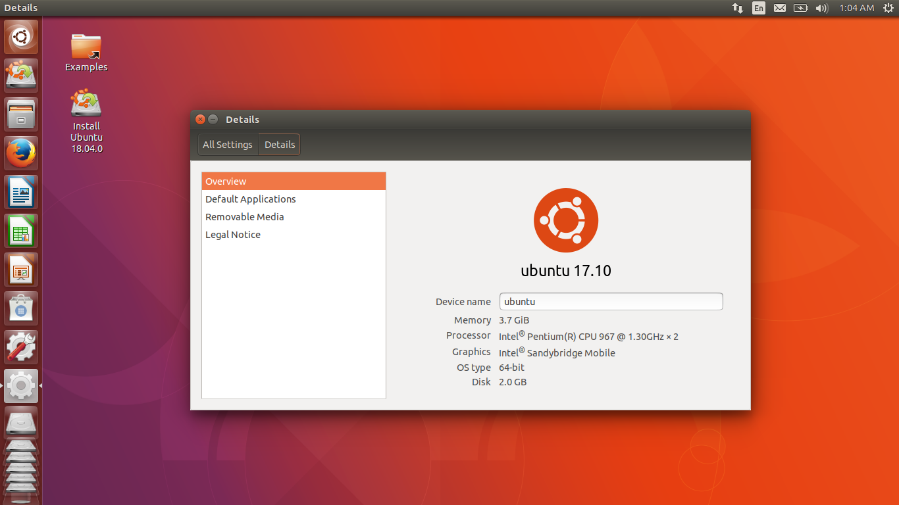

Ubuntu
Ubuntu est une distribution lancée par la société Canonical en 2004.
Ubuntu est basée sur Debian.
Environnements de bureau : Unity (par défaut)/Kubuntu (KDE)/Xubuntu (xfce)/Lubuntu (LXDE)

Ubuntu sous l'environnement de bureau Unity
Les plus
- Ubuntu est disponible gratuitement et librement. Le code ubuntu peut être réutilisé, modifié à notre guise.
- Ubuntu est une distribution stable. De plus, des utilisateurs lambdas ne peuvent modifier aucun élément qui pourrait atteindre la stabilité générale.
- Son installation est facile.
- Une nouvelle version d'Ubuntu sort tout les 6 mois.
- Ubuntu est sécurisée
- On peut facilement installer des applications grâce à l'application "Logiciels Ubuntu"
- Possède une forte documentation francophone.
- On peut configurer ses pilotes à la souris.
- Basée sur Debian et possède donc une bonne compatibilité avec ses paquets.
- Les mises à jour de sécurité sont simples et gérées via de simples fenêtres.
- Ubuntu est accessible à tout type d'utilisateurs.
Les Moins
- Les utilisateurs qui étaient sous une autre distribution Linux auparavant peuvent ne pas l'apprécier car Ubuntu modifie les environnements.